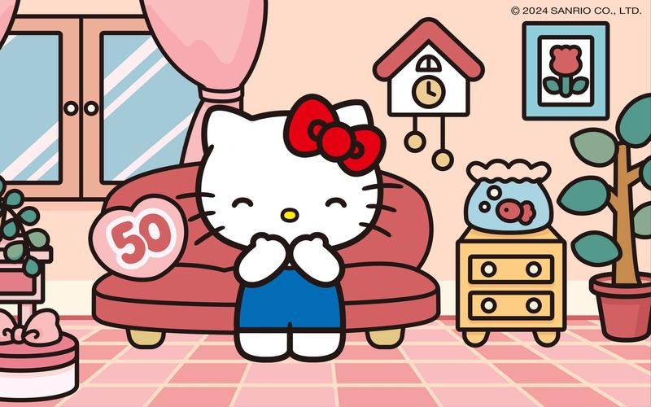
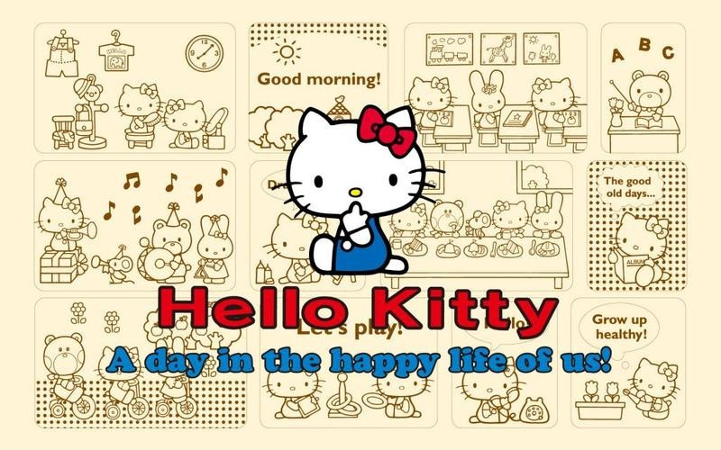
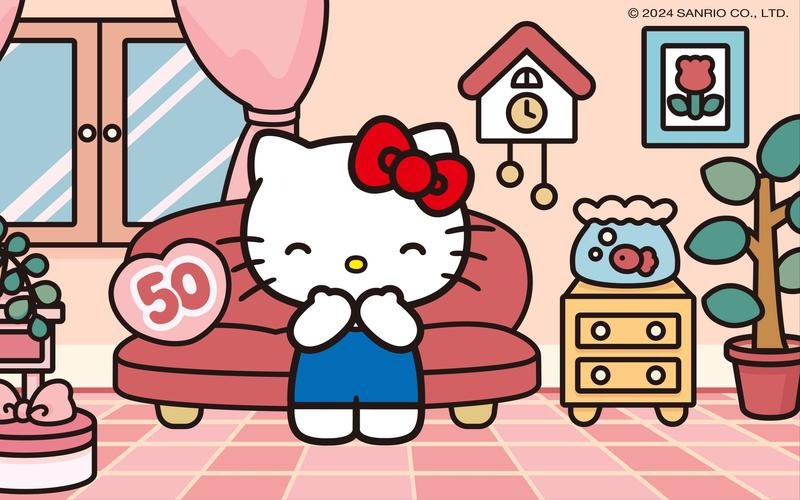
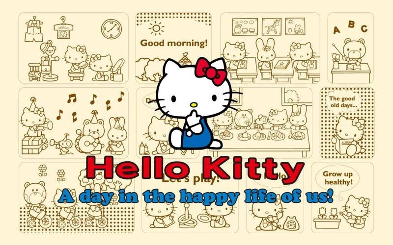

个人信息姓名：张三 学校：四川大学文学与新闻学院 星座：金牛座 家乡：福建 兴趣爱好：听音乐、看电影、旅游 |
简介我是一个性格开朗的女生，对工作充满热情，做事沉稳负责。善于与人沟通在校期间积极参与各种社团与兼职活动。有一定的社会实践经验。在班级担任学习委员，善于与他人沟通交流，积极乐意地为同学服务，在一定程度上锻炼了自己的能力，但我深知自己还有很多的不足，需要不断地提升充实自己。本人性格开朗、稳重、有活力，待人热情、真诚。有耐心和人沟通交流，具有亲和力，在机会面前能够表现自己和发挥自己的特长，具有分析能力，能够快速适应新的环境，独立自主性较强，喜欢挑战，做事情有计划和系统性。工作认真负责，积极主动，能吃苦耐劳。有较强的组织能力、实际动手能力和团体协作精神，能迅速的适应各种环境，并融合其中。 |